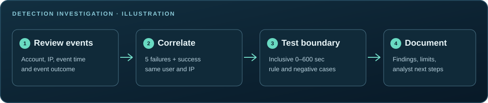

The investigation
A successful login can be more interesting when it follows a burst of failures. I built a correlation rule that groups events by username and source IP, then checks whether a success follows at least five failures within ten minutes. The goal is to produce a useful triage lead with enough context to investigate.
The lab has two fixtures: a small Python example with one expected finding, and a broader 64-event matrix spanning nine scenario families. The broader matrix exposed an important difference between the original SPL window and the intended inclusive boundary.
The boundary that changed the result
The first Splunk matrix run returned 3 of 5 expected findings. Both missing cases involved failures exactly 600 seconds before a successful login.
I replaced the implicit ten-minute window with an explicit calculation of each prior failure’s age, counting values from zero through 600 seconds inclusive. The corrected results and the saved one-panel dashboard matched all five expected findings in the reviewed screenshots.
This was a correction against a known test oracle. It demonstrates the boundary behavior of this training exercise; it does not measure detection accuracy on operational traffic.
Original 3/5 discrepancy ↗ · Corrected SPL ↗
The evidence

The observed dashboard is in Splunk Enterprise Search & Reporting. Its single results panel is verified by screenshot. The frozen expected findings ↗ provide the comparison target.

How the detector works
- Validate the input. Require the expected CSV fields and valid timestamps before correlation.
- Keep identities separate. Track failures for each username and source-IP pair.
- Apply the time boundary. Evaluate recent failures when a success arrives.
- Reset the streak. Clear failures after every success so separate login sequences do not contaminate one another.
The 31 Python tests cover matching and nonmatching events, boundary conditions, reset behavior, ordering, identity isolation, malformed input, and the validation matrix.
Reproduce the lab
From the repository root, run the detector and its focused checks:
python projects/01-authentication-detection/detect_auth.py projects/01-authentication-detection/auth_events.csv
python projects/01-authentication-detection/validate_matrix.py
python -m unittest discover -s projects/01-authentication-detection -p 'test_*.py' -vThe small fixture flags alice at 192.0.2.15 after six failed logins followed by success. The broader matrix has five expected findings across nine scenario families.
Python lab instructions ↗ · Splunk runbook ↗
The analyst decision
Disposition: investigate the sign-in context. A match is consistent with a brute-force hypothesis, but repeated typing errors or authorized automation may produce similar behavior. Review MFA, session and device details, account history, source context, and independent endpoint observations before escalating.
The rule can miss distributed attempts, rotating sources, low-and-slow activity, or incomplete telemetry. The analyst case report ↗ records the training timeline and reasoning. The authentication activity charts provide a separate view of the 64-event training CSV.
Scope and further work
All events are synthetic. Screenshot review establishes the visible result, without independent search-job or export provenance. Indexed CSV parity, scheduled alert triggering, and production detection performance remain unverified.
Prepared dashboard and alert resources
The optional six-panel XML, indexed-data dashboard, nine SPL searches, and disabled saved alert are prepared source artifacts. Their runtime behavior is separate from the observed one-panel dashboard.
Native dashboard guide ↗ · Indexing guide ↗ · Alerting guide ↗